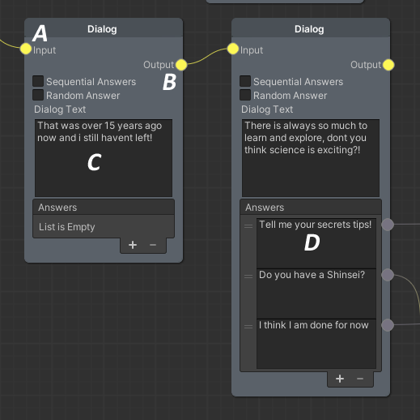

Dialogue system
This dialog system has two main actors, Conversations and Dialogables
Dialogable
A dialogable is a component that allow you show conversations in the player screen the most important parts are
Start Conversation This function first hide the player personal UI like a name and icon, later block player movement, change the camera view to this dialoguer camera and start the conversation routine depending of firstDialog variable
...
public void StartConversation()
{
ServiceLocator.Instance.GetService<ILobbyNetworkManager>().ShowPlayerPersonalUI(false);
if (dialogUI.IsPlayerDialogate)
return;
if (UIGroups.instance != null && !UIGroups.instance.lastActivate.Equals("planner"))
return;
isOnDialog = true;
thirdPersonController.CanBeBlocked = true;
thirdPersonController.IsMovementBloqued = true;
thirdPersonController.CanBeBlocked = false;
dialoguerCamera.SetActive(true);
canvas.SetActive(false);
dialogUI.gameObject.SetActive(true);
if (UIGroups.instance != null)
UIGroups.instance.ShowOnlyThisGroup("dialogue");
ServiceLocator.Instance.GetService<ILobbyNetworkManager>().CurrentPlayer.GetComponent<PlayerUI>().HideNameTag(false);
if (firstDialog && firstConversation.dialogGraph != null)
{
PlayerPrefs.SetInt(playerPrefVar, 0);
firstDialog = false;
StartCoroutine(firstConversation.ConversationRoutine(dialogUI, EndConversation, this));
}
else
{
StartCoroutine(conversation.ConversationRoutine(dialogUI, EndConversation, this));
}
}
...
Conversation
This class keep the logic of conversation, store the dialogs and answers and show them to the player by UI elements The most important function is the coroutine ConversationRoutine
First notify the player is dailogating then clear dialog UI and their components after that check if you use a special code <!Index!> to launch a callback and start to write dialog in the screeen
If find a answer dialog, draw responses in the screen and start wait to the player confirmation using the SendResponse function
At the end of all dialogs and responses, trigger the EndConversationCallback and leave the execution
public IEnumerator ConversationRoutine(DialogUI dialogUI, Action EndConversationCallback = null, Dialogable targetDialogable = null)
{
dialogUI.IsPlayerDialogate = true;
Init(dialogUI, EndConversationCallback);
while (true)
{
string dialogText = currentNode.dialogText;
//Get actions inside texts
if (currentNode.dialogText.Contains("<!"))
{
string[] dialogParts = dialogText.Split(new string[] { "<!" }, StringSplitOptions.RemoveEmptyEntries);
string splitedDialog = dialogParts[1];
splitedDialog = splitedDialog.Split(new string[] { "!>" }, StringSplitOptions.RemoveEmptyEntries)[0];
if (targetDialogable != null)
targetDialogable.CallbackEvents[int.Parse(splitedDialog)].Invoke();
dialogText = dialogText.Replace($"<!{splitedDialog}!>", "");
//TODO fix this later for more cases in this case if you use callback by dialog the dialog close inmediately
EndConversationCallback?.Invoke();
EndConversationCallback = null;
dialogUI.gameObject.SetActive(false);
dialogUI.IsPlayerDialogate = false;
break;
}
dialogUI.WriteText(dialogText, NotifyPlayerReadText, currentNode.Answers.Count > 0);
while (true)
{
if (isPlayerReadText)
{
isPlayerReadText = false;
break;
}
yield return null;
}
NodePort port;
if (currentNode.Answers.Count < 1) //Take default node
port = currentNode.GetPort("output");
else //Take answer node
{
isWaitingResponse = true;
while (isWaitingResponse)
yield return null;
port = currentNode.GetPort("Answers " + responseIndex);
}
if (port != null && port.IsConnected)
UpdateDialog(port.Connection.node as DialogNode, dialogUI, EndConversationCallback);
else
break;
yield return null;
}
EndConversationCallback?.Invoke();
dialogUI.gameObject.SetActive(false);
dialogUI.IsPlayerDialogate = false;
}
All data for conversations is stored in a class called
DialogGraph
Dialog graph is a Custom ScriptableObject made with XNode, you can write conversation visually easy
Each Dialog Graph contains multiple DialogNode

Input and Output node controls de dialog flow, if output is empty and the node has'nt responses the conversation end.
A: Input
B: Output
C: Dialog Text (Here you can put the text of conversation)
D: Responses (Each response has her own output node for conversation flow)